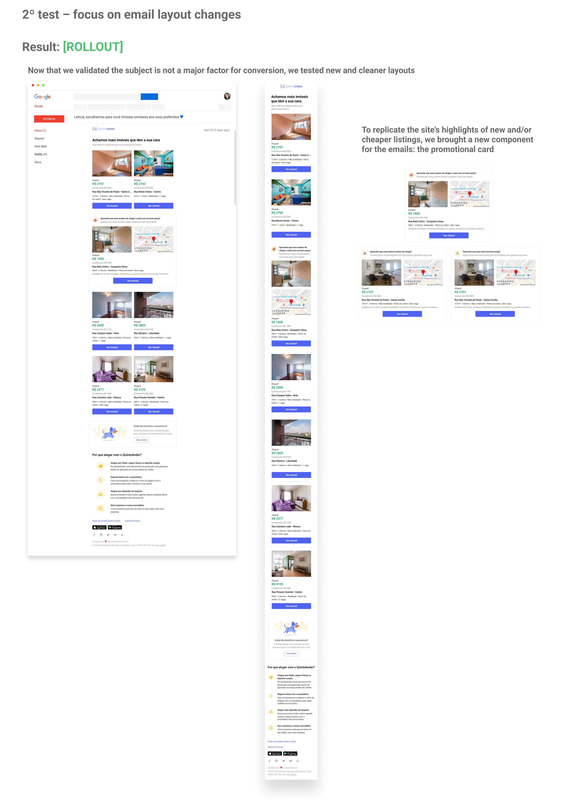
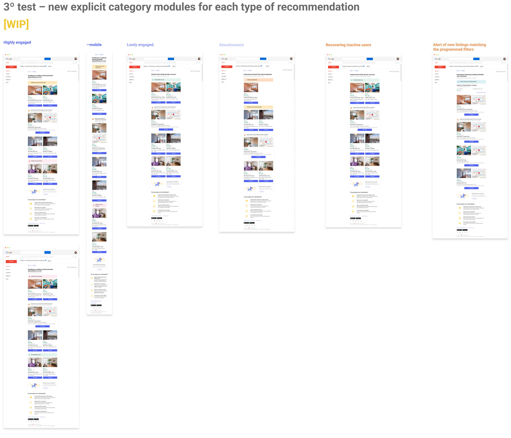
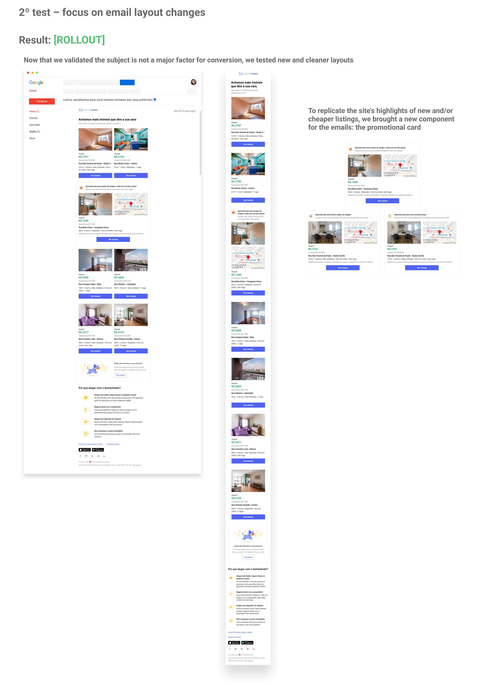
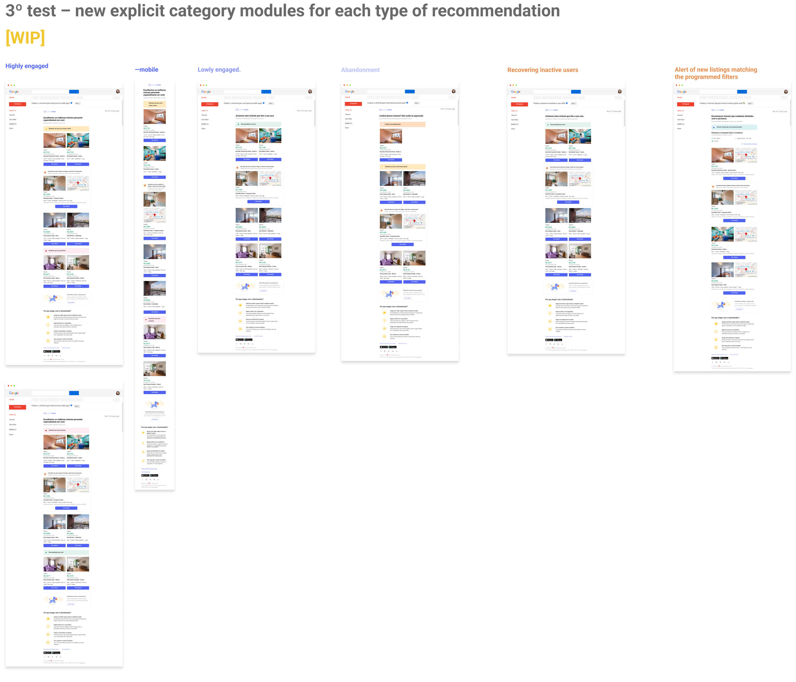

Resume
At QuintoAndar, I worked in a Growth squad whose goal was to:
Increase users' conversion to visit scheduling to the listings available at the site
We specifically focused on strategies of user activation and notification at our renting platform and for that, we gathered data on the performance of our main communication channel with users at that stage of the funnel: e-mails.
Being aware that are different patterns of home searching, we categorized some usage profiles according with our quantitative data to draw an efficient communication plan for each one on them.

What
Lead nurturing through an e-mail communication system powered by listing recommendation algorithms.
Why
Increase the number of visits booked by renters with small incremental improvements using one of our most powerful channels.
Problem
How might we access users who need to find listings that fit their search with urgency? Meanwhile, how might we engage the user who doesn't have urgency and/or is searching on other real estate platforms as well?
Business perspective
E-mails: according to our quantitative analysis, data points recommendation e-mails as the major source of scheduled bookings, exceeding retargetting communications.
Reach: we've been sending around 10.000 e-mails per day to all our renter audience and had a high opening rate, which means good visibility and potential.
Segmentation: Our e-mails are segmentend by recommendation algorithms in development by the squad. These algorithms returned similar listings to the ones that users had already interacted with in the previous days, but we began studying wich interactions were most valuable and how to deliver that similarities.
User perspective
In the product: similar listings' section is highly accessed by renters in their sessions at our platform, this indicates that users search for options alike the ones that sparkled interest in them.
Market patterns: also, it's an already stablished pattern (specially between e-commerces) sending e-mails with content recommendations to bring back users to the site.
”How can I have more options without having the trouble of searching the whole site?”
Research goals
-
#1
How were our current communications performing? Where are the gaps for improvement?
-
#2
How is our user's relationship with these communications? What do they expect from them? Is there any information they miss?
-
#3
What kind of change in the e-mails is sensitive to the desired conversion?
Research methods
-
#1
Desk research of already sent content and its performance metrics
-
#2
Exploratory qualitative interviews through phone calls with a semi-structured screening
-
#3
A/B testing
Framework used
-
What I want to find out: What do they think of the communication? How is their interaction with it? Do they recognize which of their interactions at the site triggered it? Do they wish for some information that's not already in the e-mails?
-
What can I ask to find that out
-
Who I want to exclude: Profiles that belong to landlords, agents, +30 days inactive users and in-house personnel
Based on Michael Margolis' UX Research method.
What we found out
-
#1
The more urgency a user has to rent a place, the more he will desire for recommendations. They often clicked at the listings in the e-mails to check its details.
-
#2
Users that weren't in a hurry to move out also had eyes on our communication, but would easily dismiss it if there weren't exceptional options.
-
#3
Even users that were not in a hurry would read the e-mails almost daily, often at night to discuss the listings with a partner.
-
#4
Price and localisation were the most important information for most users and while many factors could make it more or less flexible, they ignored listings too far from what they were seeking.
-
#5
The biggest complaint about our communication was the lack of accuracy of our recommendations when it came to neighborhoods and price.
-
#6
Most users would search homes not only at our platform, but at competitors which meant they would receive e-mails not only from us as well.
Solution
Prototypes
We defined a multi-phase round of tests in which we would try out incremental changes. By always measuring performance through indicators we kept close eyes on, we could understand what were the changes that were more sensitive to click rates and ultimately, visits booked.
 


